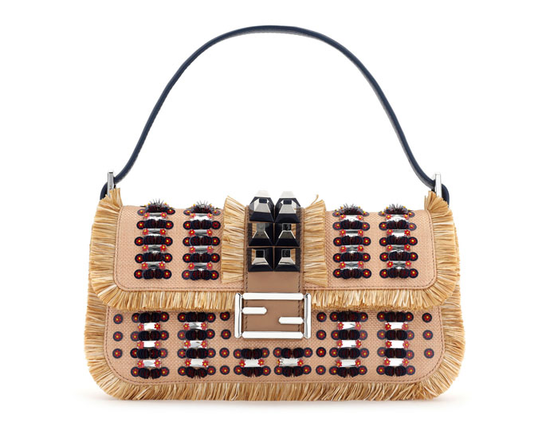

홈 > 브랜드 매거진 > 펜디
펜디
펜디(Fendi)는 1925년 로마에서 설립된 이탈리아 럭셔리 모피·가죽제품 하우스이다.
산업 분야 패션·럭셔리 · 공개 등급 자료 기반 · 브랜드 평가 4.3 ★

한눈에 보는 브랜드
펜디는 1925년 이탈리아 로마 비아 델 플레비시토의 작은 모피·가죽 공방에서 에도아르도 펜디와 아델레 카사그란데 부부가 창립했다. 1965년 카를 라거펠트 합류로 모피 하우스에서 현대적 럭셔리로 도약했고, 2001년 LVMH 패션·가죽 부문에 편입되며 글로벌 메종으로 확장했다.
2025년 창립 100주년을 맞은 로마 기반 하우스다.
브랜드 관점
펜디의 차별점은 모피 공예라는 출발점과 가족 경영의 연속성에 있다. 구찌가 로고 중심의 대중문화 화제성을, 보테가 베네타가 무로고 절제미를 앞세운다면, 펜디는 더블F(주카) 모노그램과 바게트·피카부 같은 아이코닉 백, 그리고 창업가 3세 실비아 벤투리니 펜디로 이어진 장인 서사를 무기로 삼는다.
2024년 킴 존스, 2025년 실비아의 크리에이티브 직위 이양에 이어 마리아 그라치아 키우리가 최고크리에이티브책임자로 합류한 것은 100년 가족 메종이 외부 거장 체제로 전환하는 분기점이다. 한국 독자에게는 청담 첫 플래그십과 주요 백화점 유통을 통해 브랜드 접점이 빠르게 늘어난 점이 의미가 크다.
시작과 성장
양차 대전 사이 로마는 장인 공방 문화가 번성하던 도시였고, 1925년 에도아르도 펜디와 아델레 카사그란데 부부는 비아 델 플레비시토에 모피·가죽 매장을 열었다. 1932년 비아 피아베 부티크로 확장하며 로마를 찾는 관광객의 명소가 됐다.
1946년 다섯 자매 파올라·안나·프랑카·카를라·알다가 각 20퍼센트 지분으로 2세대 경영에 합류해 가족 기업의 골격을 세웠다. 1965년 카를 라거펠트가 합류해 더블F 로고를 고안하고 1977년 레디투웨어로 영역을 넓혔으며, 1997년 실비아 벤투리니 펜디가 바게트 백을 선보였다.
2001년 LVMH 편입은 국제 확장의 결정적 도약대였다.
브랜드 아이덴티티
펜디의 핵심 가치는 로마 장인정신과 모피·가죽 공예의 정밀함, 그리고 위트 있는 실험성이다. '펀 퍼(Fun Furs)'에서 나온 더블F 주카 모노그램과 16미터 LED 아치로 상징되는 로마 본사 팔라초 델라 치빌타 이탈리아나의 건축 이미지가 비주얼 아이덴티티를 이끈다.
타깃은 헤리티지와 동시대 감각을 함께 원하는 상위 럭셔리 소비층이며, 브랜드 보이스는 진중한 장인성에 로마 특유의 유머와 대담함을 더한 톤을 유지한다.
제품과 서비스
카테고리는 여성·남성 레디투웨어, 모피, 가죽 제품, 슈즈, 액세서리, 홈으로 구성된다. 시그너처 백은 바게트, 피카부, 스파이, 마마 바게트이며 더블F 주카 패턴이 폭넓게 쓰인다.
가격은 피카부 약 230만~830만원대, 바게트 약 470만원대 등 사이즈·소재·마감에 따라 차이가 크다. 유통은 직영 부티크와 공식 온라인, 주요 백화점 채널을 함께 활용한다.
현재 상태
본사는 로마 팔라초 델라 치빌타 이탈리아나에 있다(2025년 창립 100주년 기념으로 밀라노 비아 솔라리 사옥 리뉴얼). 모회사는 LVMH 패션·가죽 부문으로 2001년 편입됐다.
CEO는 2024년 6월 취임한 피에르-에마뉘엘 앙젤로글루, 최고크리에이티브책임자는 2025년 10월 합류한 마리아 그라치아 키우리다. 임직원은 로마 본사 400명 이상이며 전사 총원은 미공개다.
매장 수와 진출 국가 수의 정확한 수치는 미공개이며, 한국은 2023년 청담 첫 플래그십을 운영한다. 매출은 LVMH가 개별 비공개로 미공개다.
타임라인
BI/CI 변천사
함께 읽을 브랜드
패션·럭셔리 · 자료 기반보테가 베네타 패션·럭셔리 · 편집 검수구찌패션·럭셔리 · 편집 검수조르지오 아르마니
패션·럭셔리 · 편집 검수구찌패션·럭셔리 · 편집 검수조르지오 아르마니
보테가 베네타(Bottega Veneta)는 1966년 이탈리아 비첸차에서 설립된 럭셔리 가죽제품 브랜드이다.
패션·럭셔리 · 편집 검수구찌패션·럭셔리 · 편집 검수조르지오 아르마니조르지오 아르마니(Giorgio Armani)는 1975년 밀라노에서 설립된 이탈리아 럭셔리 패션 하우스이다.
패션·럭셔리 · 편집 검수버버리버버리(Burberry)는 1856년 설립된 영국의 럭셔리 패션 하우스이다.
패션·럭셔리 · 편집 검수크리스챤 디올크리스챤 디올(Christian Dior)은 1946년 파리에서 설립된 프랑스 럭셔리 패션 하우스이다.
패션·럭셔리 · 자료 기반돌체앤가바나돌체앤가바나(Dolce & Gabbana)는 1985년 도메니코 돌체와 스테파노 가바나가 설립한 이탈리아 럭셔리 패션 하우스이다.
패션·럭셔리 · 자료 기반Coccinelle코치넬레(Coccinelle)는 1978년 이탈리아 파르마 인근에서 설립된 가죽 핸드백·액세서리 브랜드이다.
패션·럭셔리 · 편집 검수생 로랑생 로랑(Yves Saint Laurent)은 1961년 파리에서 설립된 프랑스 럭셔리 패션 하우스이다.